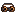

Attunement Forge
Place the forge or use the Attunement Tome. Offer Relic Shards and focus materials to roll a skill.
DeepForge Studios
Find relics. Equip them. Attune what you keep.


First join also gives starter relics, shards, and craft materials.


.mcaddon and enable Behavior + Resource packs.Browse by slot or rarity. Equip in the Reliquary.
Fuse two relics + a catalyst at the Relic Forge.
Equipped relics add Boost power by rarity (Common 1 · Uncommon 2 · Rare/Ascended 3). Your strongest style becomes active.
Bind skills to relics at the Attunement Forge. Wear them to grow ranks.
Place the forge or use the Attunement Tome. Offer Relic Shards and focus materials to roll a skill.

Common → Uncommon → Rare → Epic. Higher rarities add new behavior, not just bigger numbers.
Focus pairs pick an affinity group. Shards and material amounts set the rarity cap.

Fake chests that bite. Biome skins and different bite effects. Defeat them for relic loot.

Craft materials into relics and ascend fusions. Recipe: crafting table, book, 2 amethyst, deepslate bricks.

Towers, witch homes, underground camps, archaeology, and rare mob drops feed your Reliquary.